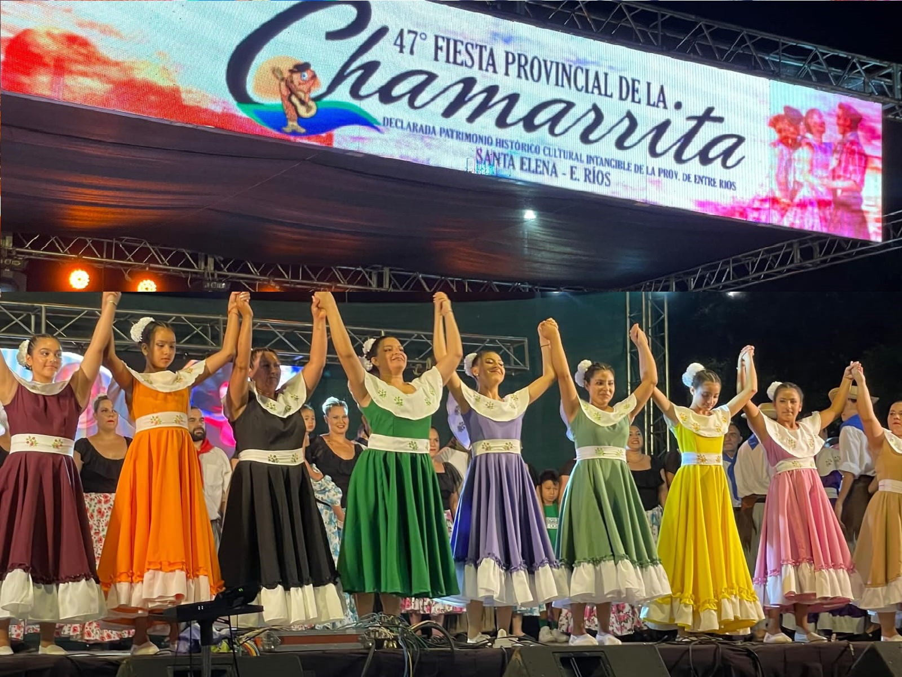
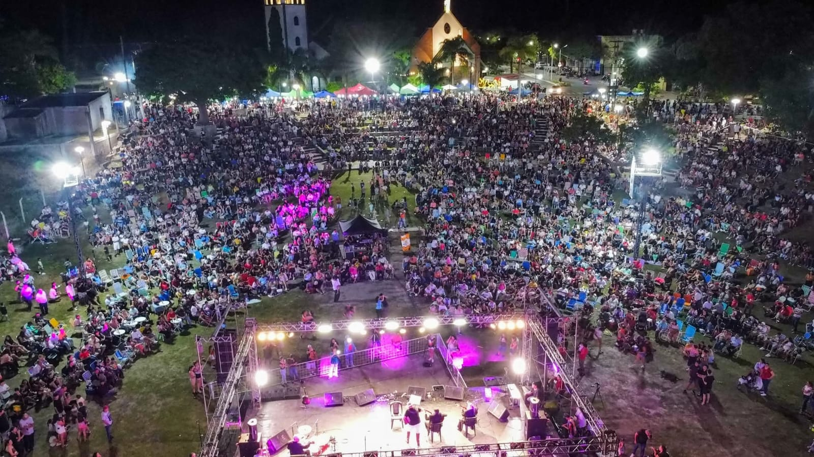
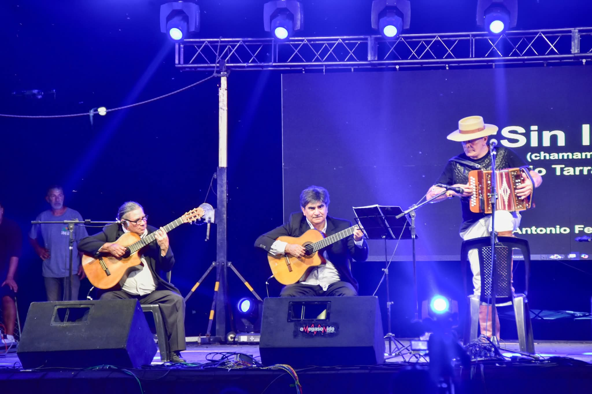
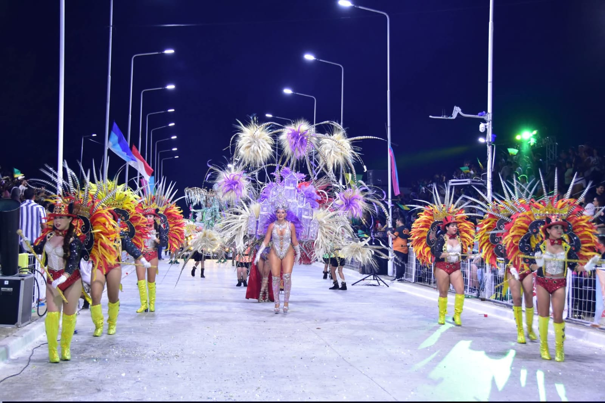
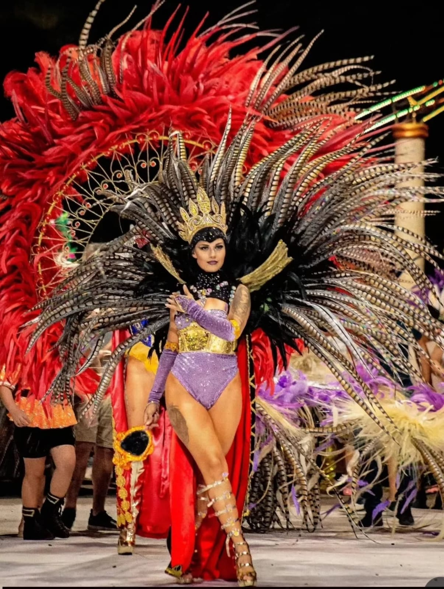
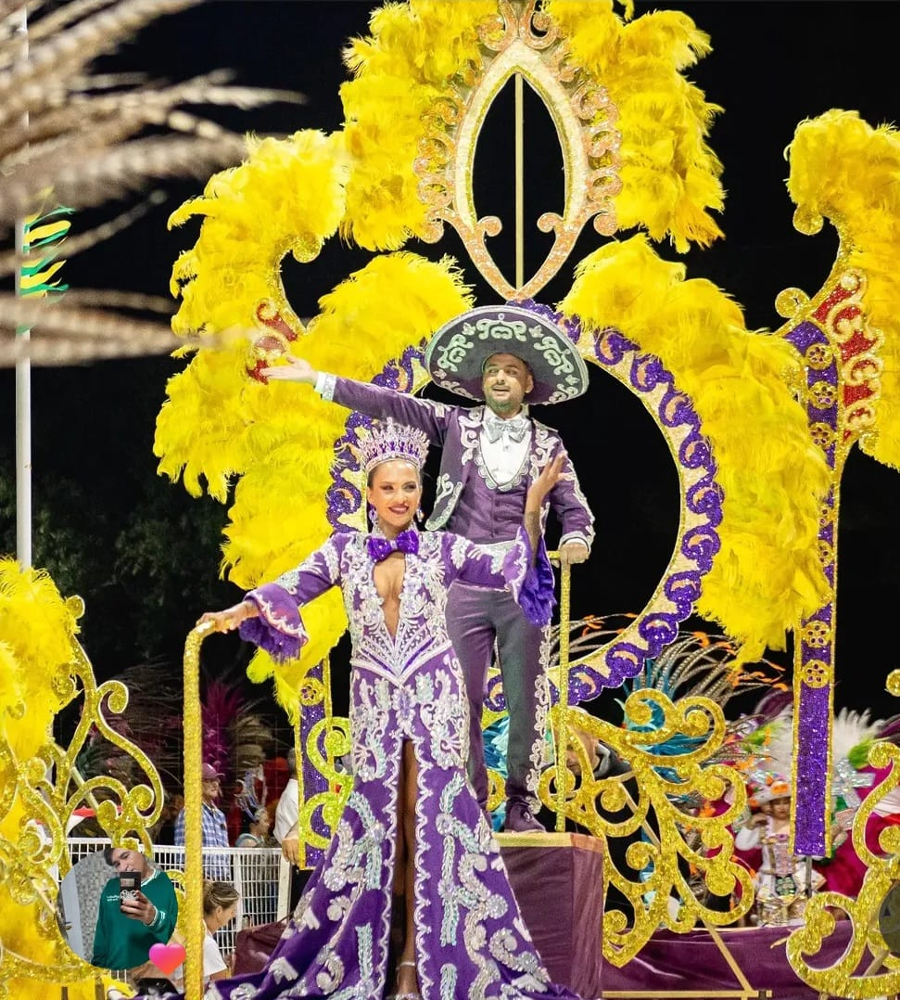
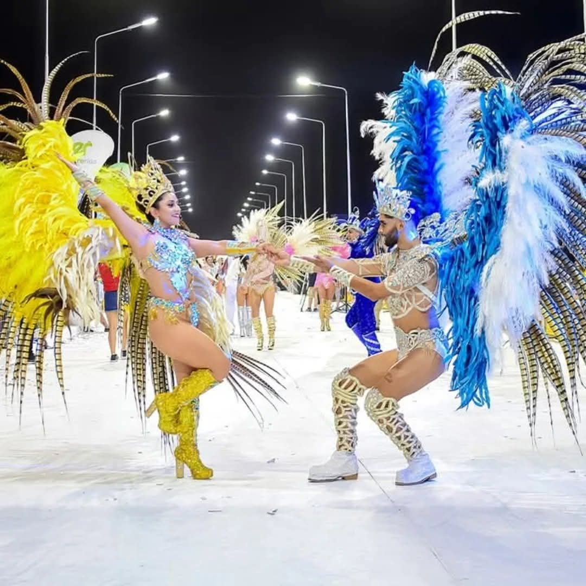
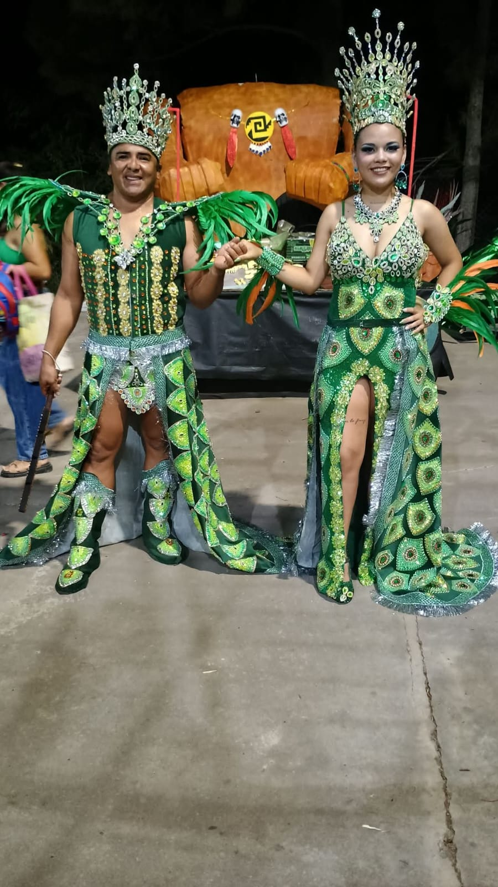

Festival de la Chamarrita
Es uno de los eventos culturales más importante de Santa Elena. Celebrada tradicionalmente en el Anfiteatro Municipal Padre Fidel Alberto Olivera
Cada mes de enero, la ciudad celebra la Fiesta Provincial de la Chamarrita, un evento cultural de entrada libre y gratuita que reúne a miles de vecinos y turistas.



Carnavales
El Carnaval "Sentí la Pasión" de Santa Elena se celebró durante los meses de enero y febrero, destacándose como una de las fiestas más importantes del verano entrerriano.
Se destacan las comparsas: "PORASI", "BABIYU", "ITAPORA" y "EMPERATRIZ"

Poräsí

Babiyú

Itaporá

Emperatriz